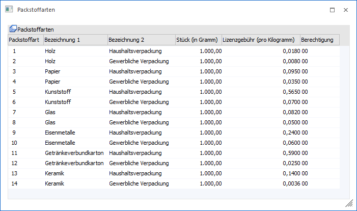

Im Programmpunkt…
1 WinLine FAKT
1 Stammdaten
1 Verpackung
1 Packstoffarten
.. können bis zu 999 verschiedene Packstoffarten hinterlegt werden. Diese können in weitere Folge in einzelnen Collis (WinLine FAKT - Stammdaten - Verpackung - Colli-Stamm) aktiviert und mit einer Menge versehen werden. Hierdurch können folgenden Informationen ausgewiesen werden:
ü In der Belegerfassung können die Kosten des Verpackungsmaterials ausgewiesen werden. Hierfür stehen folgende Variablen zur Verfügung:
ü 0/900 - 0/909 (Bezeichnung 1 der ersten 10 zugewiesenen Packstoffarten)
ü 0/910 - 0/919 (Lizenzgebühr pro Kilogramm der ersten 10 zugewiesenen Packstoffarten)
ü 0/920 - 0/929 (Gesamtlizenzgebühr der ersten 10 zugewiesenen Packstoffarten)
ü 0/930 - 0/939 (Gesamtgewicht in Kilogramm der ersten 10 zugewiesenen Packstoffarten)
ü Wenn die Colli-Stamm-Einstellung "Meldepflicht für Verpackungsmeldung" mit der Option "0 - Pflichtig" versehen wurde, dann werden die Packstoffkosten (Lizenzgebühr) in der Verpackungsmeldung (WinLine FAKT - Auswertung - Verpackung - Verpackungsmeldung) ausgewiesen.
Hinweis zur Berechnung
Die Berechnung der Lizenzgebühr wird wie folgt durchgeführt:
ü 1. Gesamtgewicht
Menge der
Belegerfassung x Menge lt. Colli-Stamm
ü 2. Gesamtgewicht in
Kilogramm
(Gesamtgewicht / 1000) x Stück in Gramm lt.
Packstoffarten-Stamm
ü 3. Lizenzgebühr
Gesamtgewicht
in Kilogramm x Lizenzgebührt pro Kilogramm lt. Packstoffarten-Stamm

Ø Packstoffart
Pro Packstoffart wird automatisch eine fortlaufende Nummer vergeben.
Hinweis
Zum Anlegen einer neuen Packstoffart muss der Fokus in die erste freie Zeile der Tabelle gesetzt werden.
Achtung
Gemäß österreichischer Verpackungsverordnung muss ab dem 01.01.2015 eine Aufsplittung nach Haushaltsverpackungen und gewerblichen Verpackungen erfolgen. Diese Unterteilung ist durch die Nutzung von separaten Packstoffarten zu realisieren.
Ø Bezeichnung 1 / Bezeichnung 2
In diesen Spalten können die Packstoffarten mit 2 Bezeichnungen (zu je 40 Zeichen) versehen werden.
Ø Einheit
An dieser Stelle wird die Gewichtseinheit definiert, in welcher der Packstoff verwendet wird (z.B. in Gramm, Kilogramm, etc.). Aufgrund dieses Faktors wird in weiterer Folge das Gesamtgewicht in Kilogramm umgerechnet, um die Lizenzgebühr zu bestimmen.
Ø Lizenzgebühr
In dieser Spalte wird die Lizenzgebühr pro Kilogramm hinterlegt.
Ø Berechtigung
Für jede Packstoffart kann ein Berechtigungsprofil vergeben werden. Wenn der Anwender eine Packstoffart aufruft, wird geprüft, ob der Anwender einer Benutzergruppe zugeordnet wurde, welche in dem jeweiligen Profil enthalten ist und ob somit eine Bearbeitung erlaubt wäre (nähere Informationen entnehmen Sie bitte dem WinLine ADMIN - Handbuch).
Hinweis
Benutzern des Typs "Administrator" oder mit der Administratorenberechtigung "Benutzeradministrator" steht in der Auswahlbox der Punkt ">> Neues Profil" zur Verfügung. Über die Anwahl dieses Eintrags kann in der Folge ein neues Berechtigungsprofil angelegt werden.
Buttons
Ø Ok
Durch Anwahl des Buttons "Ok" bzw. der Taste F5 werden die Packstoffarten gespeichert.
Ø Ende
Bei Anwahl des Buttons "Ende" bzw. der Taste ESC wird das Fenster geschlossen und alle nicht gespeicherten Änderungen verworfen.